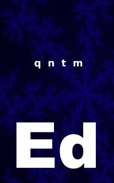

Ed, by qntm

by qntm, 2021.
It took me a few pages to shift gears to match the provocatively casual style, but once I did, it quickly became an engrossing and endearing read. The book collects a series of tiny but grand adventures, each riffing on one of the titular Ed's fabulous new inventions or discoveries. Together these form an arc which burns through combinations of high-concept SF ideas at an unseemly rate.
It reminded me of what I've fondly said about 200AD (the galaxy's greatest comic), that somehow the superficiality of the medium allows writers to experiment more wildly with form and content, throwing up a torrent of creativity which, while sometimes uneven, generates moments of sheer brilliance. I thought being a comic was an essential part of that formula. But Ed proves me wrong by achieving the same velocity of verve and vigor, rendered in prose. A delight.
The Epilogue reminds me gleefully of this Stack Overflow World-building answer I gave a few months ago.
For those like me with an epub fetish, you can buy Ed in many formats, including Amazon links, EPUBs, or free-to-read online, at the author's site.